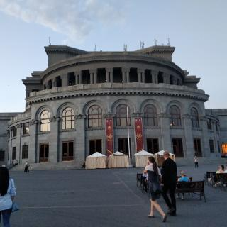
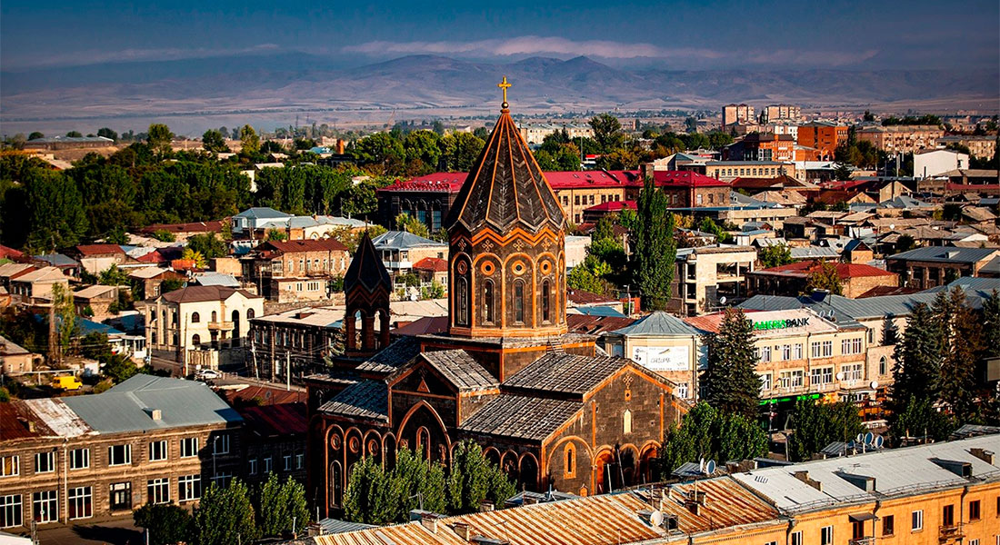
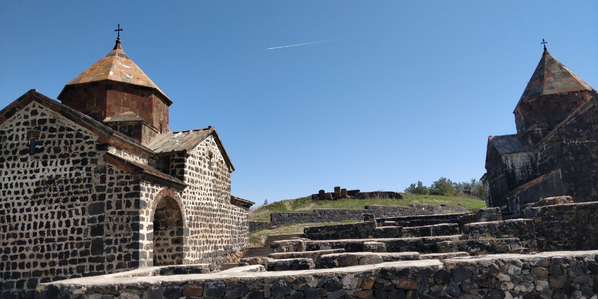
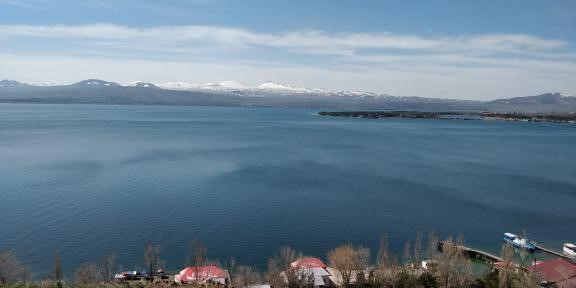

About us
Hello! Thank you for considering our tour operator in Armenia. We are truly passionate about providing our clients with a unique and fulfilling travel experience. We believe that responsible tourism is the way forward, and we have made it our mission to promote sustainable tourism practices that benefit both the local communities and the environment. Our approach to responsible tourism involves a multifaceted strategy that seeks to preserve historic sites and cultural heritage, promote local economic development, and preserve the planet's biodiversity. When you travel with us, you can rest assured that you are supporting the preservation of culturally significant sites and heritage. We work closely with local organizations to ensure that these treasures are protected for future generations to enjoy. This approach is not only essential for preserving the heritage, but it also allows our clients to gain a deeper understanding of the significance of these sites and their importance to the local communities. Promoting local economic development is another important aspect of our responsible tourism approach. We prioritize partnering with small-scale businesses and local communities on our trips. This approach not only helps to contribute to the well-being of the host communities, but it also allows our clients to gain a unique and authentic insight into the local way of life. This is an essential part of responsible tourism, as it allows visitors to learn about and appreciate the local culture while contributing to the local economy. Finally, we are deeply committed to preserving the planet's biodiversity. We strive to minimize our environmental impact wherever possible. We work with our clients to promote environmentally responsible practices, such as reducing waste and conserving energy. Our tours are designed to showcase the natural beauty of the region while minimizing our ecological footprint. We believe that we all have a responsibility to protect the planet, and we are committed to doing our part. In conclusion, traveling with us means more than just a vacation - it's an opportunity to make a positive impact on the world around us. We hope that you will join us on our journey towards responsible tourism and help us make a difference in the world.
Our tours

Immerse yourself in Yerevan's architectural wonders. Marvel at the majestic Republic Square, where history comes alive against the backdrop of the National History Museum and Government House. Wander the streets adorned with pink tufa stone buildings, a distinct hallmark of Yerevan's charm.

Explore the cobbled streets of Gyumri, where each corner reveals a piece of its storied past. The city's architecture is a testament to its resilience, with traditional homes boasting intricate designs and vibrant colors that tell tales of generations gone by

Discover the trifecta of Armenian beauty as you journey through the captivating trio of Yerevan, Sevan, and Dilijan. This adventure promises a tapestry of experiences, from vibrant city life to serene lakeshores and lush forests.

Escape to the serene beauty of Lake Sevan, where the Sevan Cheese Farm is nestled. Surrounded by the breathtaking landscape, this haven is dedicated to the art of crafting exquisite cheeses that capture the essence of the region.
Contacts

Text for WhatsApp

Text for Viber

Text for Telegram